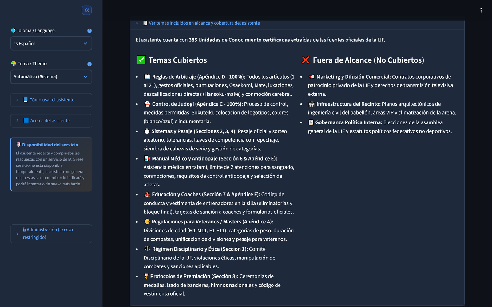
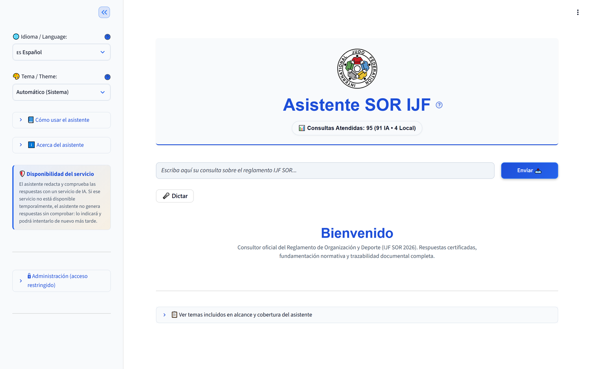
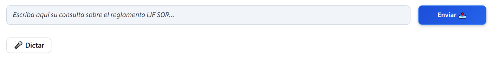
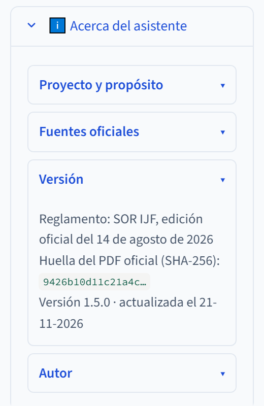
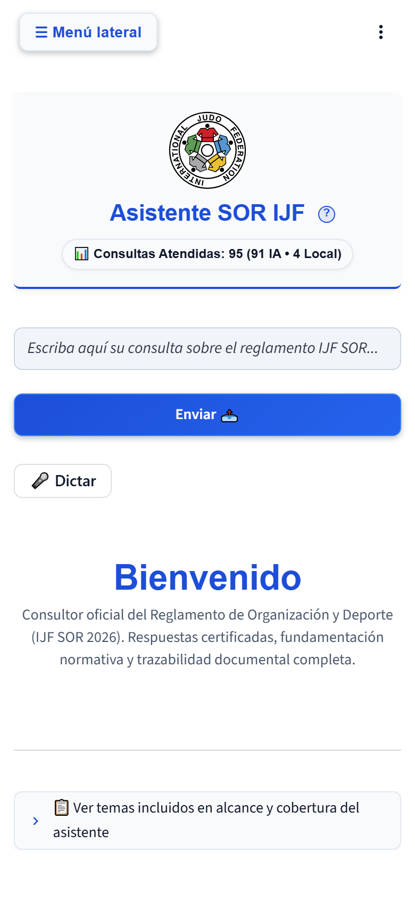

Guía de uso
Consulte el reglamento oficial Sport and Organisation Rules (SOR) de la Federación Internacional de Judo con preguntas en lenguaje natural, por escrito o por voz, y compruebe cada respuesta en la página del PDF oficial.
Para árbitros, entrenadores, deportistas y personal técnico.
| Versión de la aplicación | 1.5.0 · actualizada el 21-11-2026 |
| Reglamento | SOR IJF, edición oficial del 14 de agosto de 2026 |
| Dirección | https://sor.alxol.com |
| Idiomas | Español e inglés |
| Fecha de esta guía | 21 de noviembre de 2026 |
El IJF SOR Assistant responde preguntas sobre el reglamento SOR de la IJF. Cada respuesta se basa únicamente en el texto oficial, se comprueba contra él antes de mostrarse e incluye enlaces a la página exacta del PDF para que usted pueda verificarla.


| Zona | Para qué sirve |
|---|---|
| Barra lateral (izquierda) | Idioma, tema visual, ayuda 📘 Cómo usar el asistente, ℹ️ Acerca del asistente y el aviso 🛡️ Disponibilidad del servicio. Se oculta con el botón «. |
| Contador 📊 Consultas Atendidas | Número de consultas respondidas por el asistente. |
| Campo de consulta y Enviar 📤 | Donde escribe su pregunta. |
| 🎤 Dictar | Dicta la pregunta con el micrófono (sección 4). |
| 📋 Ver temas incluidos… | Temas cubiertos y fuera de alcance. |
🔒 Administración (acceso restringido) es solo para el responsable del servicio; no la necesita para consultar.

La respuesta aparece bajo el campo de consulta, en la pestaña 📝 Consulta actual, con el título «Respuesta oficial (verificada con el SOR 2026)». Se organiza así:
| Parte | Qué contiene |
|---|---|
| Respuesta | La contestación directa a su pregunta. |
| Regla normativa aplicable | Los artículos y apartados del SOR que la fundamentan. |
| Condiciones, excepciones y diferencias por categoría | Matices que cambian la respuesta, cuando existen. |
| Citas 📍 Art. · Pág. y enlaces 📄 Pág. | Llevan a la página del PDF oficial donde está la regla. |
| Aviso de origen | Indica cómo se obtuvo la respuesta; por ejemplo, «🤖 Respuesta LLM · generada por …» a partir de los pasajes del SOR y revisada por el control de integridad, o «Respuesta local» sin modelo generativo. |
| Evidencias Normativas Certificadas | Los pasajes oficiales que usa la respuesta, con artículo, página y la cita textual. Hay más en Ver evidencias complementarias adicionales. |
| 📚 Trazabilidad y Citas / 🕸️ Subgrafo Relacional | Detalle de las citas y relaciones entre los artículos, para quien quiera profundizar. |
El PDF oficial pesa unos 29 MB: con conexiones lentas puede tardar en cargarse. Si el visor no carga, use ↗ Pestaña oficial.
Si el reglamento no contiene información suficiente, o la respuesta no puede comprobarse con el texto oficial, el asistente se abstiene: muestra «⛔ Sin respuesta · no se emite dictamen» en lugar de suponer. Cuando los hay, los pasajes consultados quedan disponibles como referencia.
Si el servicio de IA no está disponible temporalmente, el asistente tampoco genera respuestas sin comprobar: lo indicará y podrá intentarlo más tarde (aviso 🛡️ Disponibilidad del servicio).
| Opción | Uso |
|---|---|
| 🌐 Idioma / Language | Español o inglés. Cambia la interfaz, las respuestas y el idioma del dictado. |
| 🎨 Tema / Theme | Automático (según su sistema), Claro u Oscuro. |
| 📘 Cómo usar el asistente | Ayuda breve: cómo consultar, cómo leer la respuesta, cuándo no responde, historial y reportes. |
| ℹ️ Acerca del asistente | Proyecto y propósito, fuentes oficiales, versión y autor. |
En Acerca del asistente → Versión puede confirmar la edición del reglamento, la huella del PDF oficial (SHA-256) y la versión de la aplicación.


Estas consultas se hicieron en la aplicación publicada el 21-11-2026. La columna derecha indica dónde está la respuesta en el SOR, para que pueda comprobarla.
| Consulta | Qué respondió el asistente |
|---|---|
| ¿Cuántos shidos llevan a hansoku-make? | Tres shidos · Pág. 176 |
| ¿Cuál es la tolerancia del pesaje aleatorio? | 5 % · Pág. 79 |
| ¿Qué pasa si un cadete defiende con la cabeza? | Shido · Art. 18.1.4, Pág. 188 |
| ¿De qué colores debe ser el judogi? | Blanco y azul · Pág. 124 |
| ¿Cuánto tiempo de osaekomi da ippon? | 20 segundos · Pág. 152 |
| How long is a senior contest? | 4 minutes · Pág. 152 (consulta en inglés) |
La redacción de la respuesta puede variar entre consultas; la regla citada y su página son las que debe comprobar.
| Situación o mensaje | Qué hacer |
|---|---|
| ⛔ Sin respuesta · no se emite dictamen | Reformule con más detalle o compruebe el alcance (sección 7). |
| El servicio no está disponible | Espere unos minutos e inténtelo de nuevo. |
| Permiso de micrófono denegado… | Permita el micrófono para este sitio en la configuración del navegador, o escriba la consulta. |
| No se encontró un micrófono disponible… | Conecte o active un micrófono, o escriba la consulta. |
| Este navegador no permite dictar… | Use un navegador compatible con el dictado (por ejemplo, Chrome actualizado) o escriba la consulta. |
| El servicio de voz del navegador no está disponible… | Revise su conexión a internet e inténtelo más tarde. |
| No se detectó voz… | Pulse 🎤 Dictar y hable más cerca del micrófono. |
| Dictado detenido por un cambio de idioma o de tema… | Pulse 🎤 Dictar de nuevo. |
| El visor PDF no carga | Espere (el PDF es grande) o use ↗ Pestaña oficial. |
| Encontré un error en una respuesta | Repórtelo en 💬 Ayúdanos a mejorar (sección 8). |
9426b10d11c21a4c…